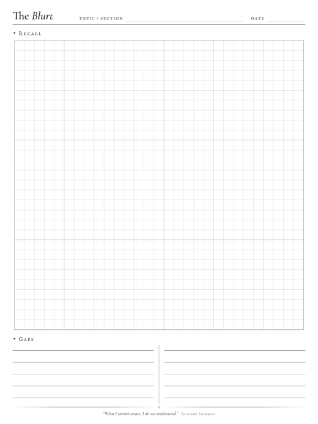
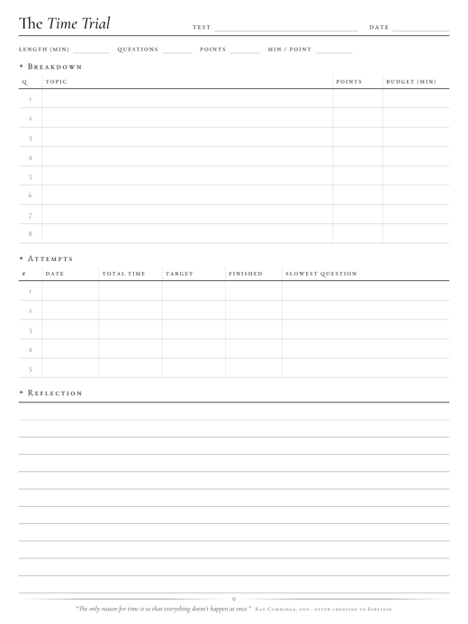
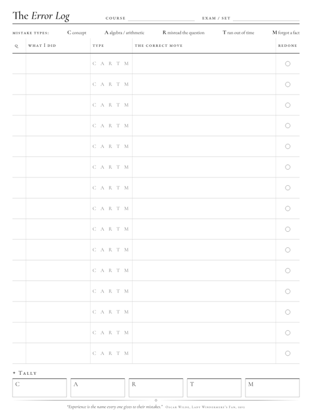
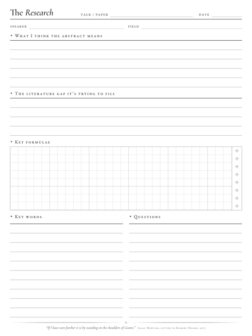
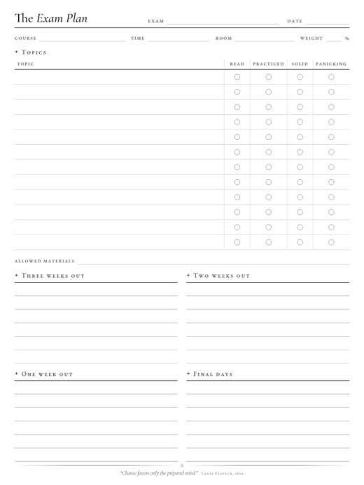
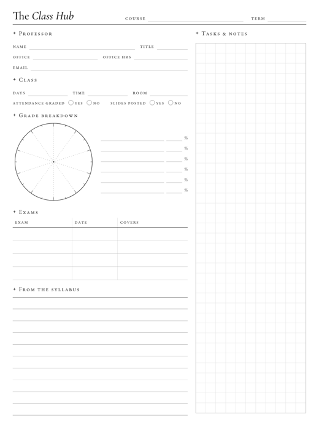
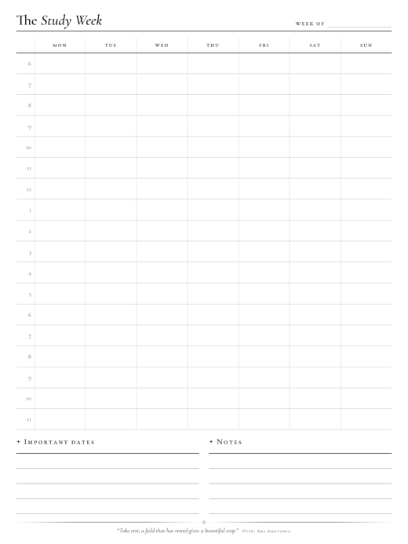
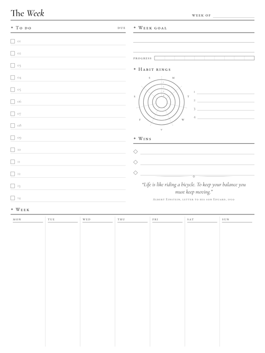
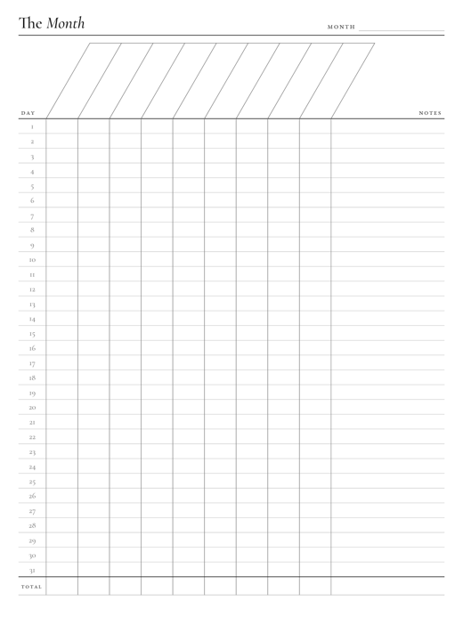

The Scholium
Notes from the margin of a physics degree.
Free, openly licensed study tools from a math and physics undergraduate. A scholium is the note that follows a proof, the remark in the margin that explains it.
Download the templatesStudy templates
Eleven undated pages for the Supernote Nomad and reMarkable 2, at the device’s native 1404 × 1872 px.









Install
- Download the latest release and unzip it.
- Connect the Nomad by USB, or use the Supernote Partner app.
- Copy the PNG files into the MyStyle folder.
- Create a note and choose the template from your custom templates.
Also here
Istari, a dark scholarly theme for Obsidian, with a companion plugin for margin sidenotes. See it here.
License
| Templates | CC BY-NC-SA 4.0. Share and adapt with credit; not for sale; adaptations under the same license. |
| Code | MIT: the build script, the theme, and the plugin. |
| Fonts | EB Garamond and Cormorant Garamond, SIL Open Font License 1.1. |